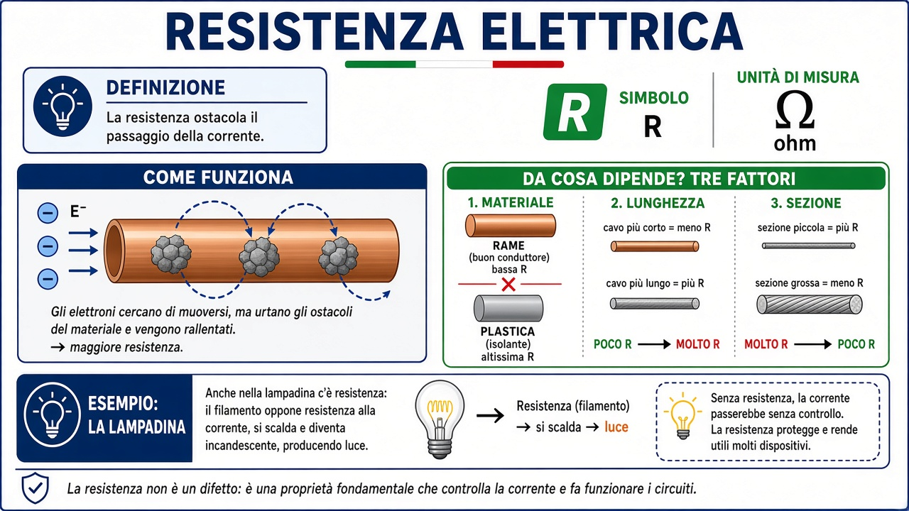
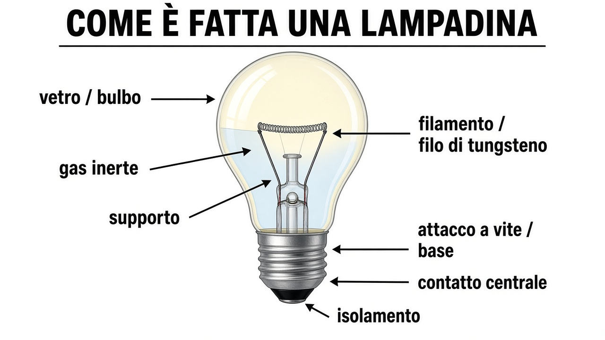

Docente: apri «Soluzione» solo per correggere. In stampa le soluzioni restano nascoste agli alunni.
Circuito semplice con lampadina
Componenti del circuito chiuso
| Componente | Ruolo |
|---|---|
| Generatore (simbolo E) | Fornisce la tensione (forza elettromotrice, FEM): «spinge» le cariche elettriche nel circuito. |
| Interruttore | Apre o chiude il percorso. Aperto = circuito interrotto, lampadina spenta. |
| Conduttori (fili) | Portano la corrente da un componente all’altro. Se manca un filo, il circuito è aperto. |
| Lampadina | Trasforma l’energia elettrica in luce (e calore) quando passa corrente. |
Perché la lampadina si accende?
La lampadina si accende solo se:
- Tutti i fili collegano i componenti in un anello chiuso (circuito chiuso).
- L’interruttore è chiuso (ON).
- Il generatore con E è inserito nel circuito.
Se il circuito è aperto (filo staccato, interruttore aperto, lampadina non collegata), le cariche non fanno il giro completo: non passa corrente e la lampadina resta spenta.
Cosa indica il simbolo E?
E indica la tensione del generatore, cioè la forza elettromotrice (FEM). In parole semplici: è la «spinta» che fa muovere le cariche nel filo quando il circuito è chiuso. Non è la lampadina e non è la corrente: è ciò che permette alla corrente di circolare.
Poli + / − e lunghezza del filo
+ e − sono i poli del generatore (tensione E), non «il filo corto» o «il filo lungo». Se un filo è più lungo, di solito cambia la resistenza R, non il segno del polo. Approfondisci in Resistenza elettrica e nella scheda Legge di Ohm.
Cos’è la resistenza elettrica?
Simbolo R, unità ohm (Ω). La resistenza ostacola il passaggio della corrente: più resistenza → di solito corrente più debole (a pari tensione).

Come è fatta una lampadina

Quando il circuito è chiuso, la corrente attraversa il filamento: diventa incandescente e illumina.
Schema semplice
Esercizi
1. L’interruttore è aperto ma tutti i fili sono collegati. La lampadina si accende? Perché?
Soluzione (docente)
No. Con l’interruttore aperto il circuito è interrotto: la corrente non passa, anche se i fili ci sono.2. Manca un filo tra generatore e lampadina. Cosa succede?
Soluzione (docente)
Circuito aperto: nessun percorso chiuso per le cariche → corrente nulla → lampadina spenta.3. Cosa indica il simbolo E sul generatore?
Soluzione (docente)
La tensione / forza elettromotrice (FEM) del generatore: la spinta che fa circolare le cariche nel circuito chiuso.4. «Il filo più lungo è sempre il polo negativo.» Vero o falso?
Soluzione (docente)
Falso. + e − sono i poli del generatore. La lunghezza del filo influisce sulla resistenza R, non sul segno del polo.5. Stesso materiale e stessa sezione: un filo più lungo ha resistenza maggiore o minore?
Soluzione (docente)
Di solito maggiore (più percorso → più ostacoli al passaggio degli elettroni → R più alta).Realizzato dal Prof. Rossano Bella